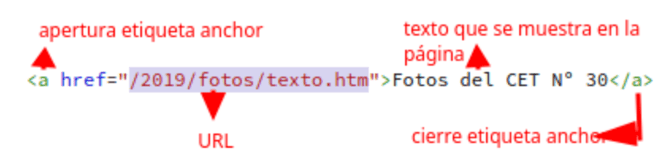

TP 02
Alec Marredo
1.1-¿Qué es una URL?
La URL o la "Uniform Resource Locator" es una especie de cadena de texto que especifica dónde uno
puede encontrarse un medio
(página, imagen, video, sonido, etc.) en Internet. Es también conocido como dirección WEB o enlace.
Estructura:

1.2-¿Qué es una URL absoluta?
Una URL absoluta nos brinda la URL completa de un documento con el
protocolo incluido de (http: // o https: //) el nombre y la ruta.
1.3-¿Qué es una URL relativa?
Una URL relativa describe la ruta a un archivo actual al documento.
Se utilizan cuando se vincula a otro docuemnto en la propia página.

1.4-¿Cuál es la diferencia entre una URL relativa y una URL absoluta?
La diferencia esta en que la URL relativa describe la ruta a un archivo actual al documento
y la absoluta nos brinda la URL completa de un documento con el
protocolo incluido
1.5-¿Crear tres enlaces absolutos a tres recursos. Los recursos deben ser PDF, PNG, TXT

PDF
TXT
¿Qué es un directorio? ¿Qué relación hay con una carpeta?
Un directorio y una carpeta son lo mismo en esencia. Ambos sirven para organizar y
almacenar archivos y otros directorios (o carpetas) en una estructura jerárquica. El término "directorio" se usa más en contextos técnicos,
mientras que "carpeta" es más común en entornos gráficos de sistemas operativos.
En la estructura de un proyecto web, ¿a qué se llama directorio raíz? ¿Con qué símbolo se representa?
En un proyecto web, el directorio raíz es la carpeta principal que contiene todos los archivos y
subcarpetas del proyecto. En Windows, se usa una letra de unidad seguida de dos puntos y una barra invertida (C:\)
Un archivo XLS que deseamos enlazar se encuentra alojado en el servidor de nuestra institución educativa,
dentro de la carpeta de recursos compartidos llamada "documentos". Dentro de esta carpeta, hay otra subcarpeta llamada "excel",
donde se encuentra específicamente el archivo que necesitamos, llamado "datos_estudiantes.xls". Sabiendo que el protocolo utilizado es
https y nuestra institución es el CET Nº30. Armar la url absoluta para dicho archivo.
/home/alecmarredo/Documentos/excel/datos_estudiantes.xls
Una empresa cuyo dominio es xyzlt.com tiene su logo en archivo gif.
El logo está identificado bajo el nombre logo. Se encuentra en un host llamado data.
Todos los archivos multimedia están en un directorio llamado asset que organiza dentro según el tipo de archivo, para imágenes se utiliza img, para pdf se utiliza pdf y para audios se utiliza audios. Armar la url absoluta.
¿Cuál es el propósito de la etiqueta anchor?
El proposito de la <a></a> es anclar un enlace hacia otras pagina, archivos o ubicaciones dentro de la misma pagina
¿Qué atributo se utiliza en la etiqueta anchor para especificar la URL a la que debe enlazar?
El atributo que utiliza la etiqueta anchor para especificar la URL a la que debe enlazar "href=""
¿Qué sucede si el atributo "href" en la etiqueta anchor está vacío?
Lo que sucedera es directamente no se mostrara ningun enlace
¿Cuál es el uso del atributo "target" en la etiqueta anchor y cuáles son los posibles valores que puede tener?
El atributo target u objetivo describe cómo es que las usuarias o usuarios van a ser redirigidos con el hipervínculo.
Estos son los valores más comunes: "_self": es el valor predeterminado que
usan los hipervínculos para abrir un link dentro de la misma pestaña o ventana en la que se generó el clic.
Entonces ¿qué es un hipervínculo?
a función HIPERVINCULO crea un acceso directo que salta a otra ubicación del libro actual o
abre un documento almacenado en un servidor de red, un intranet o Internet
📚 Organizar las materias de 4to año
📁 Paso 1: Crear la carpeta "Materias" en el proyecto actual 📁
🤝 Paso 2: Agrupar materias en dos categorías 🤝
Dentro de la carpeta "Materias", crea dos grupos para las materias de 4to año: "Aula" y "Taller". De esta manera podemos categorizar las páginas.
📄 Paso 3: Crear páginas para cada materia 📄
En cada materia, crear una página. Cada página debe tener:
🔹 Título de la materia
🔹 Enlace para volver al inicio
📊 Paso 4: Crear el archivo index.html 📊
En la carpeta "Materias", crea un archivo llamado `index.html`. Aquí irá el listado de todas las materias de 4to año, organizadas por los dos grupos que creaste.
En el listado, agrega un hipervínculo para cada materia que te lleve directamente a la página correspondiente.
Utiliza las etiquetas que hemos visto como em, strong, img y otras 🎉

{kind=link}